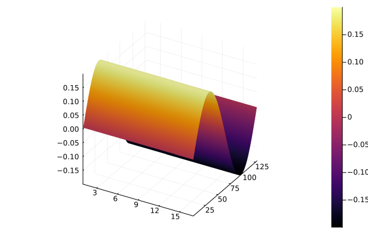
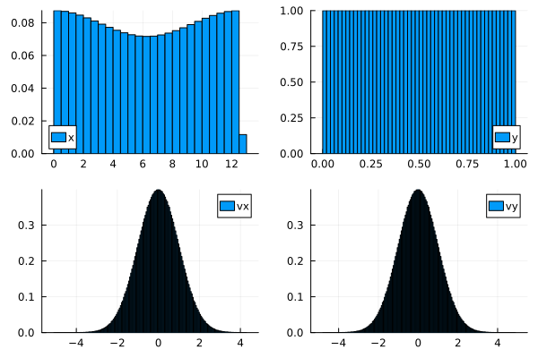
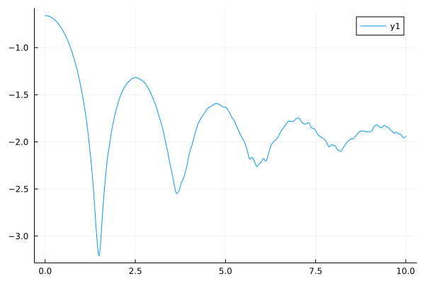

using ParticleInCell
const nx = 128
const ny = 16
alpha = 0.1
kx = 0.5
ky = 0.
dimx = 2*pi/kx
dimy = 1
poids = dimx * dimy
mesh = TwoDGrid( dimx, nx, dimy, ny)
fdtd = FDTD(mesh)
time = 0
for i=1:nx, j=1:ny+1
fdtd.ex[i,j] = alpha/kx * sin(kx*(mesh.x[i]+mesh.x[i+1])/2)
end
surface(fdtd.ex )
nbpart = 100*nx*ny
particles = ParticleGroup{2,2}( nbpart, charge=1.0, mass=1.0, n_weights=1)
sampler = LandauDamping( alpha, kx )
sample!( particles, mesh, sampler)
p = plot(layout=4)
histogram!(p[1], particles.array[1,:], normalize=true, label="x")
histogram!(p[2], particles.array[2,:], normalize=true, label="y")
histogram!(p[3], particles.array[3,:], normalize=true, label="vx")
histogram!(p[4], particles.array[4,:], normalize=true, label="vy")
function run( nstep; npm = 100 )
dt = 0.01
alpha = 0.1
kx = 0.5
dimx = 2*pi/kx
dimy = 1
nx = 128 # nombre de pts suivant x
ny = 16 # nombre de pts suivant y
mesh = TwoDGrid( dimx, nx, dimy, ny)
dx, dy = mesh.dx, mesh.dy
ex = zeros(nx+1, ny+1)
ey = zeros(nx+1, ny+1)
bz = zeros(nx+1, ny+1)
jx = zeros(nx+1, ny+1)
jy = zeros(nx+1, ny+1)
nbpart = npm*nx*ny
println( " nbpart = $nbpart ")
particles = ParticleGroup{2,2}( nbpart, charge=1.0, mass=1.0, n_weights=1)
sampler = LandauDamping( alpha, kx )
sample!( particles, mesh, sampler)
fdtd = FDTD(mesh)
for i=1:nx, j=1:ny+1
fdtd.ex[i,j] = alpha/kx * sin(kx*(mesh.x[i]+mesh.x[i+1])/2)
end
time = 0
energy = Float64[compute_energy(fdtd, mesh)]
t = Float64[time]
kernel = CloudInCell()
for istep in 1:nstep
if istep > 1
faraday!( fdtd, mesh, 0.5dt )
end
update_fields!(ex, ey, bz, mesh, fdtd)
push_v!( particles, kernel, mesh, ex, ey, bz, dt )
push_x!( particles, mesh, 0.5dt)
compute_current!( jx, jy, mesh, kernel, particles)
push_x!( particles, mesh, 0.5dt)
faraday!(fdtd, mesh, 0.5dt)
ampere_maxwell!(fdtd, mesh, jx, jy, dt)
time = time + dt
push!(t, time)
push!(energy, compute_energy(fdtd, mesh))
end
t, energy
end
nstep = 1000
t, energy = run(nstep)
plot(t, energy)
